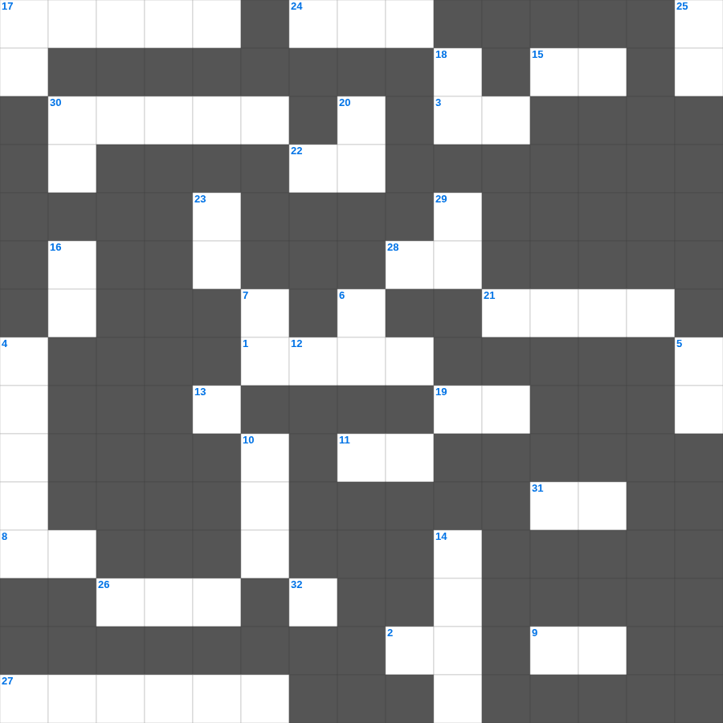

유다서 마스터 100
📌 서비스 정의
십자가로세로는 교회 주보와 주일학교에서 사용할 수 있는 성경 기반 가로세로 퍼즐 서비스입니다. 성경 인물, 사건, 핵심 구절을 바탕으로 제작되었습니다. 온라인 풀이 및 인쇄 기능을 제공합니다.
📖 유다서란?
유다서는 교회에 침투한 거짓 교사들의 위험을 강하게 경고하며, 성도들에게 믿음의 터 위에 굳게 서서 자신을 지킬 것을 권면하는 서신입니다.
📚 유다서의 주요 사건·주제
거짓 교사들에 대한 강한 경고 · 과거 심판의 사례들(소돔과 고모라 등) · 거짓 교사들의 특징 묘사 · 성도들을 향한 믿음의 권면 · 보존하시는 하나님께 대한 송영
무료로 즐기는 유다서 유다서 주일학교 퀴즈! 35개의 힌트로 구성된 가로세로 낱말 퍼즐입니다. PC와 모바일 모두 지원되며, 정답을 바로 확인할 수 있어 혼자서도 쉽게 풀 수 있습니다.

📝 가로 힌트
1. 베드로후서 1장 4절: 이것에 참여하는 자가 되게 하려 하셨느니라
2. 너희가 달음질을 잘하더니 누가 너희를 막아 이것을 순종하지 못하게 하더냐
3. 하늘에 있는 자들과 땅에 있는 자들과 땅 아래에 있는 자들로 모든 이것을 예수의 이름에 꿇게 하시고
8. 여리고 성의 기생, 정탐꾼을 숨겨줌
9. 너희는 이것의 열매 없는 일에 참여하지 말고 도리어 책망하라
11. 남자는 하나님의 형상과 이것이니 그 머리를 마땅히 가리지 않거니와
15. 바울이 너희의 믿음의 역사와 사랑의 수고와 우리 주 예수 그리스도에 대한 이것의 인내를 기억함
17. 성벽 완공 소식을 들은 대적들의 반응 '이 역사가 하나님으로 말미암아 이것을 앎이라'
19. 몸은 하나인데 많은 이것이 있고 몸의 이것이 많으나 한 몸임과 같으니
21. 예루살렘 양문 곁에 있는, 서른여덟 해 된 병자가 누워 있던 못의 이름
22. 내가 이것을 부끄러워하지 아니하노니 이 이것은 모든 믿는 자에게 구원을 주시는 하나님의 능력이 됨이라
24. 열두 해를 이것증으로 앓아온 여자가 예수의 옷에 손을 대어 구원을 얻음
26. 각 사람은 부르심을 받은 그 이것 그대로 지내라
27. 다윗이 밧세바를 범하고 나단에게 들은 말
28. 사무엘의 어머니 이름
30. 왕이 잠이 안 올 때 읽은 역대 일기에서 발견한 모르드개의 공적
31. 이것을 따르는 사람들이 있어 믿음에서 벗어났느니라 은혜가 너희와 함께 있을지어다
📝 세로 힌트
4. 내가 이미 얻었다 함도 아니요 온전히 이루었다 함도 아니라 오직 내가 잡힌 바 된 그것을 잡으려고 이것하노라
5. 주도 한 분이시요 믿음도 하나요 이것도 하나요
6. 친구의 아픈 책망은 이것으로 말미암는 것이나 원수의 잦은 입맞춤은 거짓에서 난 것이니라
7. 바울이 쇠사슬에 매인 이것이 된 이유는 복음의 비밀을 담대히 알리게 하려 함이라
10. 재물은 영영히 있지 못하나니 이것이 어찌 대대에 있으랴
12. 아브라함이 하나님을 믿으매 그것이 그에게 이것으로 여겨진 바 되었느니라
13. 드고아의 귀족들이 하지 않은 일 '공사에 이것을 메지 않음'
14. 바벨론 왕이 유다 총독으로 세웠으나 살해당한 인물
16. 우리가 아직 이것 되었을 때에 그리스도께서 우리를 위하여 죽으심으로 하나님께서 우리에 대한 자기의 사랑을 확증하셨느니라
17. 아브라함이 100세에 얻은 아들
18. 아이 성 왕을 매단 곳
18. 세례 요한이 회개의 세례를 전파하며 한 말: 이미 도끼가 이것 뿌리에 놓였으니
20. 사람이 해 아래에서 먹고 마시고 즐거워하는 것보다 더 나은 것이 이것도다
23. 예수께서 풍랑을 잔잔케 하실 때 제자들에게 하신 질문: 어찌하여 이렇게 이것이 없느냐
25. 바울의 시민권은 로마에도 있었지만 진짜는 어디에 있다고 했는가
29. 디도와 함께 언급된 율법교사
30. 엘리사를 대머리라고 놀리던 아이들을 공격한 짐승
32. 한 알의 이것이 땅에 떨어져 죽지 아니하면 한 알 그대로 있고 죽으면 많은 열매를 맺느니라
🧩 이 퍼즐에서 배우는 내용
이 퍼즐은 유다서 마스터 100의 핵심 단어와 개념을 자연스럽게 복습할 수 있도록 구성되었습니다. 주일학교 수업이나 개인 성경공부에서 학습 내용을 점검하는 용도로 바로 활용할 수 있습니다.
🧑🏫 교회 교육 자료 활용
이 퍼즐은 주일학교 교재 추천 자료로 활용할 수 있고, 주일학교 주보에 넣기 좋은 분량으로 구성되어 있습니다. 수업용 주일학교 교안에 활동지로 붙이거나, 예배 후 복습용 주일학교 공과교재로 바로 사용할 수 있습니다.
🏷️ 키워드
유다서 주일학교 퀴즈, 유다서, 십자가로세로, 성경퀴즈, 말씀퀴즈, 가로세로퍼즐, 주일학교 교재 추천, 주일학교 주보, 주일학교 교안, 주일학교 공과교재